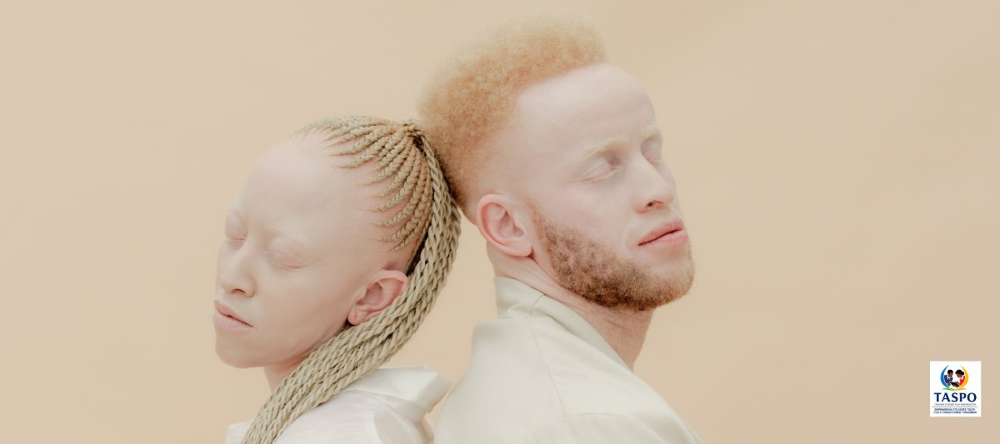

Albinism in Tanzania: A History of Suffering, Resilience and Hope
The real story of albinism in Tanzania — the discrimination, the danger, and the everyday impact on health and life, and how change is happening.
Read article →How chalk dust affects the health of students and teachers in classrooms without whiteboards, and why switching away from chalk matters.
If you've ever sat in a classroom with a traditional blackboard, you'll remember the fine white dust that settles on desks, hangs in the air, and coats the teacher's hands by the end of the day. In many schools across Tanzania and other parts of the developing world, this isn't an occasional nuisance — it's a daily reality, lesson after lesson, year after year.
It's easy to dismiss chalk dust as harmless. Unfortunately, the evidence tells a different story.
Chalk dust exposure happens when fine particles released from writing on, or wiping, a blackboard are breathed in or settle on the skin. Every stroke of chalk against a board sheds tiny particles into the air, and the amount increases sharply whenever the board is cleaned — the classic "eraser cloud" that drifts across the front rows of a classroom.
These particles are small enough that a meaningful share of them are respirable, meaning they don't just land on surfaces — they travel down into the airways and lungs. In a typical classroom, students spend around six hours a day in this environment, often with little ventilation and dozens of children sharing the same air.
The closer you sit to the board, the higher your exposure — which means the students paying closest attention, sat nearest the front, are often breathing in the most dust.
In many Tanzanian primary schools, exposure doesn't stop at the front of the room. Alongside the main blackboard, individual students are commonly given their own small personal slate boards to practise writing on with chalk at their desks. This means every child — not just those seated near the front — is handling chalk and breathing in dust at extremely close range, directly at their own workspace, for large parts of the school day.
Chalk looks like a simple, harmless stick of white mineral. In reality, its exact make-up plays a big role in how harmful the dust it releases can be.
Most classroom chalk is made from one of two base minerals:
Neither of these is toxic on its own in small amounts. The problem lies in what comes with them:
So while chalk itself isn't classed as a poison, it's the combination of fine, respirable particle size and these trace impurities — inhaled daily, at close range, for years — that turns something as ordinary as a stick of chalk into a genuine, slow-building health concern for the children and teachers who use it every day.
Chalk dust exposure rarely announces itself dramatically. It tends to build up quietly, showing up as:
Individually, these symptoms are easy to shrug off. But when they repeat every single school day, for years, they stop being minor and start being a pattern worth taking seriously.
The real concern with chalk dust isn't a single bad day — it's cumulative exposure over years of schooling. Research into chalk dust and classroom air quality points to several longer-term consequences:
None of this means chalk is acutely dangerous in the way something toxic or poisonous would be. It's a slow-building, cumulative health burden — the kind that's easy to overlook precisely because no single day feels alarming.
This is exactly why the switch to whiteboards matters. Studies comparing the two side by side, in the same classrooms with the same teaching style, found no equivalent dust spike when a whiteboard and dry-erase marker were used instead of chalk. Same lesson. Same children. Dramatically cleaner air.
It's a low-tech, low-cost, high-impact change — which is exactly why our Whiteboards for All project exists: to replace blackboards and chalk with whiteboards in Tanzanian classrooms, one school at a time, and give children and teachers a healthier place to learn and teach.
It's more than a nuisance. While a single day of chalk dust exposure isn't acutely dangerous, repeated daily exposure over months and years is linked to respiratory irritation, reduced lung function, and worsened asthma symptoms — particularly in children and teachers who spend the most time near the board.
Teachers, because they stand closest to the board for the longest periods, and students seated in the front rows. Children with asthma or existing respiratory sensitivities are also at greater risk than their classmates.
Yes. Cleaning a chalkboard releases a fresh, often finer, burst of dust into the air — which is why the "eraser cloud" moment during a lesson is one of the highest points of exposure in the whole school day.
They help reduce visible dust, but they still generate particulate matter, and they typically cost significantly more than standard chalk — which makes them hard to sustain in schools already working with limited budgets. Whiteboards remove the dust source altogether rather than reducing it.
Better airflow can help, but studies have shown that ventilation can also resuspend settled chalk dust back into the air rather than clearing it away. Removing the dust at its source — by switching to a whiteboard — is a far more reliable fix.
We install whiteboards in place of blackboards in Tanzanian classrooms, removing daily chalk dust exposure for students and teachers alike, while also improving visibility and making it easier for teachers to keep the board clean.
You can help fund whiteboard installations for classrooms that are still relying on chalk and blackboards every day. Every classroom we convert means years of reduced dust exposure for the children and teachers who use it.

The real story of albinism in Tanzania — the discrimination, the danger, and the everyday impact on health and life, and how change is happening.
Read article →How a simple swap from chalk to whiteboards gives pupils cleaner air and clearer lessons — and how your donation makes it happen.
Read article →Whether you give, partner, donate equipment or simply share our story, you help Tanzanian students learn in better conditions.